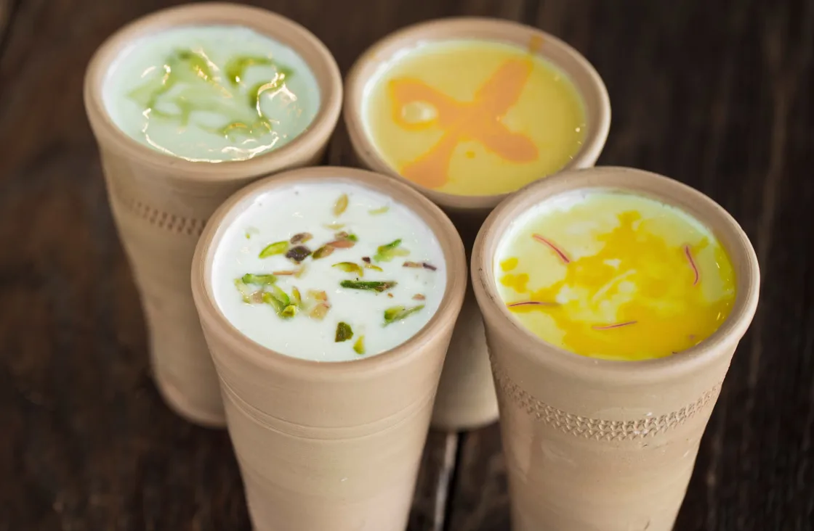

Traditional Indian food is renowned worldwide for its wonderful use of herbs and spices, and its diverse range of deep-fried snacks, pastries, curries, gravies, sauces, rice dishes, tandoor-cooked meats, vegetable dishes, chutneys, breads and sweets.In the same way that food influences traveled to India, Indian cuisine has also traveled overseas. Particular dishes have gained esteem and have trickled into cuisines all over the world, however for the most authentic of flavors and dining experiences, these dishes should really be tried in situ in their destination of origin.
9 Most Popular Traditional Dishes To Eat In India
Indian cuisine consists of a variety of regional and traditional cuisines native to India. Given the diversity in soil, climate, culture, ethnic groups, and occupations, these cuisines vary substantially and use locally available spices, herbs, vegetables, and fruits.Indian food is also heavily influenced by religion, in particular Hinduism and Islam, cultural choices and traditions.To be precise, about 31 dishes define the Indian cuisines. According to scientists, they have examined more than 2,000 Indian dishes in a common thread. Being the most diverse style of cooking, Indian dishes have become popular across the globe and loved by the masses almost everywhere you travel.
Dietary Tradition Thali
South Indian Thali
Pakora

Paratha

Butter Chicken

Malabar Fish Curry

Gulab Jamun

Ras Malai

Lassi
